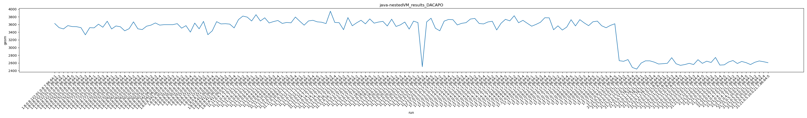
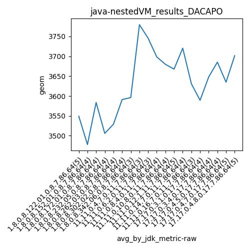
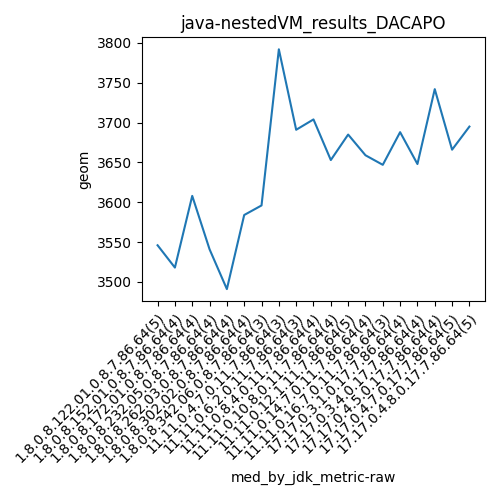
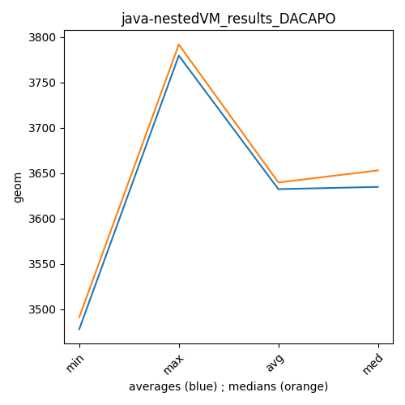

java- DACAPO
Context at bottom
/home/jvanek/git/benchmarks-in-nested-virtualisation-toolchain/final_results/nestedVM_results/nestedVM_results_SPECJBB
java-
DACAPO
/home/jvanek/git/benchmarks-in-nested-virtualisation-toolchain/final_results/nestedVM_results/nestedVM_results_RADARGUNs1
java-
DACAPO
/home/jvanek/git/benchmarks-in-nested-virtualisation-toolchain/final_results/nestedVM_results/nestedVM_results_DACAPO
java-
DACAPO
nestedVM_results_DACAPO
final score
Expected number of java- JDKs: 19
1st avgmed_alljdks_metric:
/home/jvanek/git/benchmarks-in-nested-virtualisation-toolchain/final_results/result_processing.py /home/jvanek/git/benchmarks-in-nested-virtualisation-toolchain/final_results/nestedVM_results/nestedVM_results_DACAPO geom False
values: [3626, 3518, 3485, 3571, 3546, 3543, 3518, 3332, 3518, 3513, 3608, 3529, 3685, 3484, 3562, 3541, 3436, 3491, 3669, 3488, 3468, 3556, 3584, 3640, 3584, 3596, 3596, 3596, 3728, 3819, 3792, 3691, 3855, 3691, 3774, 3640, 3676, 3704, 3628, 3653, 3644, 3794, 3685, 3583, 3693, 3709, 3669, 3659, 3624, 3945, 3654, 3647, 3465, 3780, 3502, 3436, 3688, 3731, 3725, 3589, 3630, 3648, 3742, 3758, 3626, 3615, 3666, 3684, 3458, 3632, 3734, 3695, 3828, 3646, 3708, 3631]

Expected number of iterations: 5
final number of values: 76 out of 95
Pass rate: 80.0%
values: (3332, 3945, 3629.6973684210525, 3640)

** accuracy from all jdks and runs
more is better
MIN: 3332
MAX: 3945
AVG: 3629.6973684210525
MED: 3640
Relative differences 1:
MIN-MAX: 16.0 %
MIN-AVG: 8.0 %
MIN-MED: 8.0 %
MAX-MIN: -18.0 %
MAX-AVG: -9.0 %
MAX-MED: -8.0 %
AVG-MED: 0.0 %
stored to java-.properties. sort | uniq that!
2nd avgmed_by_jdk_metric:
values: [3549.2, 3477.75, 3583.75, 3505.75, 3529.0, 3591.0, 3596.0, 3779.6666666666665, 3745.6666666666665, 3698.5, 3679.75, 3667.8, 3720.5, 3630.6666666666665, 3589.25, 3648.0, 3685.25, 3634.8, 3701.6]

values: [3546, 3518, 3608, 3541, 3491, 3584, 3596, 3792, 3691, 3704, 3653, 3685, 3659, 3647, 3688, 3648, 3742, 3666, 3695]

values: (3477.75, 3779.6666666666665, 3632.31052631579, 3634.8)
values: (3491, 3792, 3639.684210526316, 3653)

** accuracy from all jdks where runs were avged
more is better
MIN: 3477.75
MAX: 3779.6666666666665
AVG: 3632.31052631579
MED: 3634.8
Relative differences 1:
MIN-MAX: 8.0 %
MIN-AVG: 4.0 %
MIN-MED: 4.0 %
MAX-MIN: -9.0 %
MAX-AVG: -4.0 %
MAX-MED: -4.0 %
AVG-MED: 0.0 %
stored to java-.properties. sort | uniq that!
** accuracy from all jdks where runs were medianed
more is better
MIN: 3491
MAX: 3792
AVG: 3639.684210526316
MED: 3653
Relative differences 1:
MIN-MAX: 8.0 %
MIN-AVG: 4.0 %
MIN-MED: 4.0 %
MAX-MIN: -9.0 %
MAX-AVG: -4.0 %
MAX-MED: -4.0 %
AVG-MED: 0.0 %
stored to java-.properties. sort | uniq that!
/home/jvanek/git/benchmarks-in-nested-virtualisation-toolchain/final_results/nestedVM_results/nestedVM_results_JMH
java-
DACAPO
pass rates:
nestedVM_results_DACAPO=80.0%
Context:
- nestedVM_results
- DACAPO